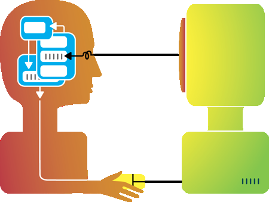

Interacción Humano Ordenador
La interacción persona-computadora o persona-ordenador (IPO) se podría definir formalmente como: La disciplina dedicada a diseñar, evaluar e implementar sistemas informáticos interactivos para el uso humano
Estos estudios son una especialización dentro de la ergonomía, el campo multidisciplinar que actúa sobre el diseño de las máquinas y del entorno de trabajo para facilitar su uso y adecuarlo a las condiciones fisiológicas, anatómicas, psicológicas y capacidades del usuario.
Es muy importante diseñar sistemas que sean efectivos, eficientes y sencillos a la hora de utilizarlos, dado que la sociedad disfrutará de estos avances. La dificultad viene dada por una serie de restricciones que obligan a los equipos de diseño a hacer algunos sacrificios en este. Algunas de las aplicaciones de esta disciplina podrían ser: la creación de librerías digitales donde los estudiantes pueden encontrar manuscritos medievales virtuales de hace centenares de años; herramientas para el campo de la medicina, como uno que permita a un equipo de cirujanos conceptualizar, alojar y monitorizar una compleja operación neurológica
|
 Interacción Humano-Computador - Mapa Mental recuperado de: https://nilosarraf.files.wordpress.com/2011/06/mental-model.png |
 Interaccion Humano - computadora recuperado https://userscontent2.emaze.com/images/eef26f10-6595-43ba-aeb8-00e77f2a034d/1b45a597cd269ca57148bd403fca9e60.jpg |
{kind=link}
{kind=link}
Bibliografia
Interacción persona-computadora 2021. Wikipedia. recuperado de: https://es.wikipedia.org/wiki/Interacci%C3%B3n_persona-computadora
Interacción Humano Computadora 2021. Figueroa Chavez Anahi Izamara. recuperado de: https://app.emaze.com/@AOWQOOTIW